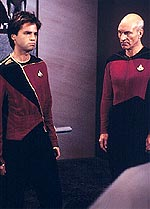
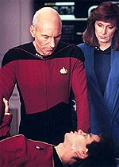
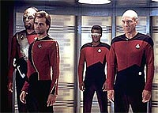

|
MANCHETE
DO EPISDIO
Episdio
bobo mistura Primeira
Diretriz e "fonte da juventude"
Episdio
anterior | Prximo
episdio
Sinopse:
Data Estelar: 41309.5.
A Enterprise responde a um chamado para mediar um incidente
envolvendo refns em Mordan IV, e o governador Karnas exige que as
negociaes sejam feitas pelo almirante Jameson, de 70 anos.
 Descobre-se
que o almirante j estivera naquele mundo 40 anos antes, negociando
num outro incidente com refns. Na poca, Karnas havia sequestrado
alguns membros da Federao e pedia armas em troca de sua libertao.
A atuao de Jameson, dando armas a Karnas mas tambm a seus
inimigos, provocou dcadas de guerra civil no planeta.
Agora, Karnas, que tambm responsvel pelo novo sequestro, quer
vingana. Entretanto, o destino pode ter-se adiantado a Karnas.
Secretamente, Jameson vem tomando um elixir da juventude que
rapidamente o est deixando cada vez mais jovem, embora os efeitos
colaterais possam ser fatais.
O almirante tem que enfrentar Karnas e tambm sua prpria mulher,
que se sente trada, na medida em que, ficando jovem, ele se
afastar dela. Ele organiza um grupo avanado na tentativa de
resgatar os refns, mas falha. Diante disso, ele decide se entregar
a Karnas. No fim das contas, o almirante morre diante do governador,
em razo da droga que estava tomando, pondo fim ao conflito.
Comentrios:
 Enquanto
"Justice" questiona a
validade da Primeira Diretriz, "Too Short a Season"
mostra como as coisas podem dar errado quando no se joga pelas
regras. Trata-se de uma demonstrao prtica sobre o porqu de a
Frota Estelar prezar tanto o princpio de no-interferncia sobre
o desenvolvimento de outras civilizaes menos avanadas.
O conflito personificado pelo almirante Mark Jameson. Sua vontade
de resolver a crise, sair vivo e glorificado quatro dcadas atrs
o fez "esquecer" a Primeira Diretriz e jogar um planeta em
uma guerra civil de 40 anos.
Embora o tema seja at interessante, a verdade que o episdio
falha totalmente em desenvolv-lo. Sua abordagem , para dizer o mnimo,
superficial, direta e bvia.
Alm dessa trama bsica, o episdio tambm possui uma histria
no estilo "fonte da juventude", tambm personificada pelo
almirante Jameson.
 Um
dos muitos problemas da histria a incapacidade de utilizar os
personagens principais. Toda a tripulao da Enterprise no passa
de coadjuvante no conflito pessoal e intransfervel entre Karnas e
Jameson!
No fim das contas, trata-se de um episdio bobo, sem ritmo, sem
concluses e sem consequncias. Em suma, faltam motivos para que
se possa apreci-lo. Nem a maquiagem de Jameson durante sua converso
de velho decrpito a um jovem viril ficou boa.
Citaes:
Picard - "The
quest for youth, Number One, so futile. Age and wisdom have their
graces too."
("A busca pela juventude, Imediato, to futil. Idade e
sabedoria tambm tem suas graas.")
Riker - "I wonder if one doesn't have to have age and wisdom
to appreciate that, sir."
("Imagino se no preciso ter idade e sabedoria para apreci-las,
senhor.")
Trivia:
 Michael Pataki, que aqui interpreta o personagem Karnas, atuou no clssico
episdio da srie original "The Trouble with Tribbles",
como o Klingon Korax, aquele que chama Scotty para a briga, na cena
do bar.
Michael Pataki, que aqui interpreta o personagem Karnas, atuou no clssico
episdio da srie original "The Trouble with Tribbles",
como o Klingon Korax, aquele que chama Scotty para a briga, na cena
do bar.
Este
episdio marca a primeira apario de um almirante da Frota na srie,
e utilizando o uniforme padro. Uniforme este que ainda seria
mudado trs vezes nas prximas temporadas.
Na
parede atrs da mesa de Karnas, pode-se ver alguns modelos de
feisers da Srie Clssica e dos filmes de cinema.
Ficha
tcnica:
Histria de Michael Michaelian
Roteiro de Michael Michaelian & D.C. Fontana
Direo de Rob Bowman
Exibido em 08/02/1988
Produo: 012
Elenco:
Patrick Stewart como
Jean-Luc Picard
Jonathan Frakes como William Thomas Riker
Brent Spiner como Data
LeVar Burton como Geordi La Forge
Michael Dorn como Worf
Gates McFadden como Beverly Crusher
Marina Sirtis como Deanna Troi
Wil Wheaton como Wesley Crusher
Denise Crosby como Natasha "Tasha" Yar
Elenco convidado:
Clayton Rohder como
almirante Mark Jameson
Marsha Hunt como Anne Jameson
Michael Pataki como Karnas
Episdio
anterior | Prximo
episdio
|